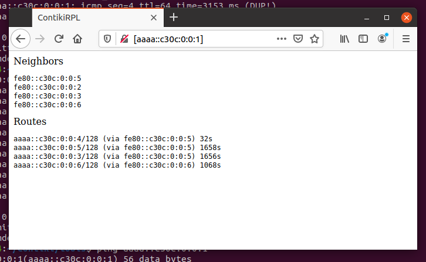

Práctica 6. 6LowPAN (simulación en Cooja)
Introducción y objetivos
Los routers de borde son enrutadores que pueden encontrarse en el borde de una red, encaminando el tráfico de dicha red hacia una segunda red externa. Su función, en definitiva, es conectar una red con otra.
En esta práctica, veremos cómo construir una simulación utilizando un router de borde en Contiki. Más concretamente, veremos cómo un router de borde Contiki puede utilizarse para enrutar tráfico entre una red RPL (una red de sensores Contiki con protocolo de enrutamiento RPL sobre IPv6) y una red IPv4 externa, siguiendo el siguiente diagrama:

El objetivo de la práctica es ofrecer una visión general sobre cómo desplegar
tanto una red RPL con Contiki en el simulador Cooja, así como conseguir hacerla
interactuar con una segunda red externa real utilizando la herramienta
tunslip.
Instalación de requisitos software
La instalación básica de Contiki (en su versión 2.7) se encuentra en
el directorio /home/ubuntu/contiki de tu máquina virtual.
Antes de comenzar, necesitarás instalar una serie de software de soporte para el correcto desarrollo de la práctica:
sudo apt install -y openjdk-8-jdk openjdk-8-jre
A continuación, asegúrate de seleccionar la versión 8 de Java para un correcto funcionamiento del proceso de compilación de Cooja:
ubuntu@ubuntu2004:~/contiki/tools/cooja$ sudo update-alternatives --config java
Existen 3 opciones para la alternativa java (que provee /usr/bin/java).
Selección Ruta Prioridad Estado
------------------------------------------------------------
0 /usr/lib/jvm/java-14-openjdk-amd64/bin/java 1411 modo automático
1 /usr/lib/jvm/java-11-openjdk-amd64/bin/java 1111 modo manual
2 /usr/lib/jvm/java-14-openjdk-amd64/bin/java 1411 modo manual
* 3 /usr/lib/jvm/java-8-openjdk-amd64/jre/bin/java 1081 modo manual
Pulse <Intro> para mantener el valor por omisión [*] o pulse un número de selección: 3
Por último, necesitarás instalar el compilador que nos permitirá generar las imágenes para los nodos en la simulación:
sudo apt-get install gcc-msp430 gdb-msp430
Código Contiki
En el desarrollo de la práctica, utilizaremos los siguientes ficheros,
todos situados en el directorio examples/ipv6/rpl-border-router de la
instalación de Contiki:
border_router.c: que contendrá la lógica de enrutamiento del router de borde.udp-client.coudp_server.c(en el directorioexamples/ipv6/rpl-udp): que actuarán como nodos en la red RPL (de momento, no es importante su funcionalidad, aunque como en la siguiente práctica utilizarás el cliente UDP, se aconseja utilizar éste).slip-bridge.c: que contiene las funciones de callback para procesar una petición de conexión SLIP.httpd-simple.c: que contiene un servidor web sencillo que nos permitirá consultar las tablas de enrutamiento del router de borde.
Los nodos que implementen el código udp-client.c o udp-server.c formarán
un DAG con el router de borde configurado como raíz. El router de borde
recibirá el prefijo de red vía una conexión SLIP (Serial Line Interface
Protocol) y lo comunicará al resto de nodos de la red RPL para que conformen
sus respectivas direcciones IPv6 globales.
Aunque no es de mayor interés de cara a la práctica, los siguientes fragmentos de código en el router de borde establecen los puntos en los que espera a la configuración del prefijo de red. Una vez recibido, el router de borde se configura como la raíz del DAG y envía el prefijo al resto de nodos de la red:
/* Request prefix until it has been received */
while(!prefix_set) {
etimer_set(&et, CLOCK_SECOND);
request_prefix();
PROCESS_WAIT_EVENT_UNTIL(etimer_expired(&et));
}
dag = rpl_set_root(RPL_DEFAULT_INSTANCE,(uip_ip6addr_t *)dag_id);
if(dag != NULL) {
rpl_set_prefix(dag, &prefix, 64);
PRINTF("created a new RPL dag\n");
}
Por defecto, el router de borde aloja una página web sencilla que nos
servirá para consultar el estado de sus tablas de enrutamiento. Esta
página se mostrará cuando introduzcamos la dirección IPv6 del router
de borde en cualquier navegador. El uso de esta página puede desactivarse
a través del valor de la macro WEBSERVER, y su activación en Contiki en
base a su valor es sencilla (fichero http-simple.c):
PROCESS(border_router_process, "Border router process");
#if WEBSERVER==0
/* No webserver */
AUTOSTART_PROCESSES(&border_router_process);
#elif WEBSERVER>1
/* Use an external webserver application */
#include "webserver-nogui.h"
AUTOSTART_PROCESSES(&border_router_process,&webserver_nogui_process);
Compilación del código
El código para router de borde puede encontrarse en la ruta
examples/ipv6/rpl-border-router. Utiliza la siguiente orden para realizar
la compilación:
cd examples/ipv6/rpl-border-router
make TARGET=z1
Una vez ejecutado, se creará un fichero llamado border-router.z1, que
se utilizará para programar las motas (dispositivos simulados) router de
borde en el simulador Cooja.
Para demostrar la funcionalidad del router de borde, crearemos una red de nodos
con el router de borde como raíz. Para ello, utilizaremos nodos cliente
UDP, implementados en el fichero udp-client.c. Para ello, prepara imágenes
para las motas de la siguiente manera:
cd examples/ipv6/rpl-udp
make TARGET=z1
Del mismo modo que anteriormente, dispondrás de un fihcero udp-client.z1,
que conformarán un DAG con el router de borde como raíz y que utilizaremos en
el resto de motas de la simulación.
Simulación en Cooja
Tras la compilación de las imágenes, llega el momento de crear la simulación completa en Cooja. Arranca el simulador usando la siguiente orden:
cd tools/cooja
ant run
Tras la ejecución, sigue los siguientes pasos para crear una nueva simulación:
- Selecciona la opción
File->New Simulation. SeleccionaUDGMe introduce el nombre de la simulación. PresionaCreate. - En el menú
Motes, seleccionaAdd New Motes->Create new motesy seleccona el timp de motaZ1. - Busca la localización de la imagen de router de borde (
examples/ipv6/rpl-border-router) y selecciona el ficherorpl-border-router.z1. Clica enCreatey añade una mota de este tipo. - Repite los pasos 2 y 3 pero esta vez con la imagen del cliente o servidor UDP que creaste anteriormente. Añade cuatro o cinco motas de este tipo y distribuyelas por la simulación.

Selecciona las opciones del menú View como se muestra en la figura, ya
que esto te permitirá crear de forma más clara tu topología (puedes
temporalmente añadir también la dirección IP, aunque puede resultar
demasiada información):

A continuación, crearemos un puente entre la red RPL simulada en Cooja y
la máquina local. Esto puede realizarse en la mota programada como
router de borde. Selecciona Tools y Serial Socket (SERVER) sobre la
mota router de borde (identíficala con su valor numérico). Obtendrás un mensaje
como el de la siguiente figura (observa que el mensaje indica
Listening on port 60001):

A continuación, arranca la simulación (botón Start).
La utilidad tunslip
Como hemos dicho, un router de borde actúa como enlace para conectar una red a otra. En este ejemplo, el router de borde se usa para establecer ruta de datos entre la red RPL y una red externa. Hasta ahora, sólo hemos creado la red RPL, por lo que necesitamos simular un escenario en el que esta red RPL se conecte a una red externa. Para ello, utilizaremos la utilidad tunslip proporcionada con Contiki. En este ejemplo, tunslip crea un puente entre la red RPL y la máquina local.
El código tunslip6.c se encuentra en el directorio tools de la instalación,
y se puede compilar con la orden:
make tunslip6
A continuación, podemos establecer una conexión entre la red RPL y la máquina local:
sudo ./tunslip6 -a 127.0.0.1 aaaa::1/64
Si la ejecución ha sido correcta, veremos una salida similar a la siguiente en la terminal:
ubuntu@ubuntu2004:~/contiki/tools$ sudo ./tunslip6 -a 127.0.0.1 aaaa::1/64
slip connected to ``127.0.0.1:60001''
opened tun device ``/dev/tun0''
ifconfig tun0 inet `hostname` mtu 1500 up
ifconfig tun0 add aaaa::1/64
ifconfig tun0 add fe80::0:0:0:1/64
ifconfig tun0
tun0: flags=4305<UP,POINTOPOINT,RUNNING,NOARP,MULTICAST> mtu 1500
inet 127.0.1.1 netmask 255.255.255.255 destination 127.0.1.1
inet6 aaaa::1 prefixlen 64 scopeid 0x0<global>
inet6 fe80::1 prefixlen 64 scopeid 0x20<link>
inet6 fe80::ace4:dadf:8e12:be05 prefixlen 64 scopeid 0x20<link>
unspec 00-00-00-00-00-00-00-00-00-00-00-00-00-00-00-00 txqueuelen 500 (UNSPEC)
RX packets 0 bytes 0 (0.0 B)
RX errors 0 dropped 0 overruns 0 frame 0
TX packets 0 bytes 0 (0.0 B)
TX errors 0 dropped 0 overruns 0 carrier 0 collisions 0
*** Address:aaaa::1 => aaaa:0000:0000:0000
Got configuration message of type P
Setting prefix aaaa::
Server IPv6 addresses:
aaaa::c30c:0:0:1
fe80::c30c:0:0:1
El programa ha creado una interfaz puente tun0 con IPv4 127.0.1.1, y ha
enviado, vía serie, un mensaje de configuración al router de borde indicando
el prefijo deseado para los nodos de la red RPL (aaaa). La salida de las últimas
dos líneas pertenece al router de borde, e indica cuáles son sus direcciones
IPv6 tras la recepción del prefijo.
Vuelve al simulador Cooja y observa que ha aparecido un mensaje en el que se observa la cadena Client connected: /127.0.0.1.
Verificación de resultados
Es posible verificar la dirección del router de borde a través de una orden ping desde tu máquina virtual:
ubuntu@ubuntu2004:~/contiki/tools$ ping aaaa::c30c:0:0:1
PING aaaa::c30c:0:0:1(aaaa::c30c:0:0:1) 56 data bytes
64 bytes from aaaa::c30c:0:0:1: icmp_seq=1 ttl=64 time=21.5 ms
64 bytes from aaaa::c30c:0:0:1: icmp_seq=2 ttl=64 time=7.44 ms
64 bytes from aaaa::c30c:0:0:1: icmp_seq=3 ttl=64 time=8.57 ms
64 bytes from aaaa::c30c:0:0:1: icmp_seq=4 ttl=64 time=62.7 ms
64 bytes from aaaa::c30c:0:0:1: icmp_seq=5 ttl=64 time=15.2 ms
--- aaaa::c30c:0:0:1 ping statistics ---
5 packets transmitted, 5 received, 0% packet loss, time 4015ms
rtt min/avg/max/mdev = 7.442/23.066/62.661/20.427 ms
Así como la de cualquier nodo de la red, por ejemplo el nodo 4:
ubuntu@ubuntu2004:~/contiki/tools$ ping aaaa::c30c:0:0:4
PING aaaa::c30c:0:0:4(aaaa::c30c:0:0:4) 56 data bytes
64 bytes from aaaa::c30c:0:0:4: icmp_seq=1 ttl=62 time=116 ms
64 bytes from aaaa::c30c:0:0:4: icmp_seq=2 ttl=62 time=106 ms
64 bytes from aaaa::c30c:0:0:4: icmp_seq=3 ttl=62 time=108 ms
64 bytes from aaaa::c30c:0:0:4: icmp_seq=4 ttl=62 time=111 ms
64 bytes from aaaa::c30c:0:0:4: icmp_seq=5 ttl=62 time=79.0 ms
^C
--- aaaa::c30c:0:0:4 ping statistics ---
5 packets transmitted, 5 received, 0% packet loss, time 4016ms
rtt min/avg/max/mdev = 79.002/104.028/115.794/12.937 ms
La dirección de cada nodo puede obtenerse filtrando el la pantalla de log en función del ID del nodo (mota) destino.
Desde cualquier navegador (en la red de la máquina virtual), puedes navegar a la dirección IP del router de borde para observar su estado:

Tarea entregable
Sigue los pasos del boletín para crear una red RPL con un número reducido
de nodos (entre 5 y 10), conectándola a tu red local. Haz que no todos los
nodos estén al alcance del router de borde, y comienza tu simulación.
Estudia y reporta el tráfico RPL generado en el proceso de generación del
DAG, y comprueba la conectividad con todos ellos vía ping6.
Realiza y reporta una serie de movimientos sobre una mota que esté
al alcance del router de borde, para que deje de estarlo. Con una ejecución
de ping6 activa sobre dicha mota, reporta el tiempo que tarda RPL en
hacer converger de nuevo el DODAG. Por último, realiza movimientos sobre
los nodos, o crea nuevas motas en la simulación, y estudia, a través de
la interfaz web del router de borde, el tiempo de establecimiento de nuevas
rutas.